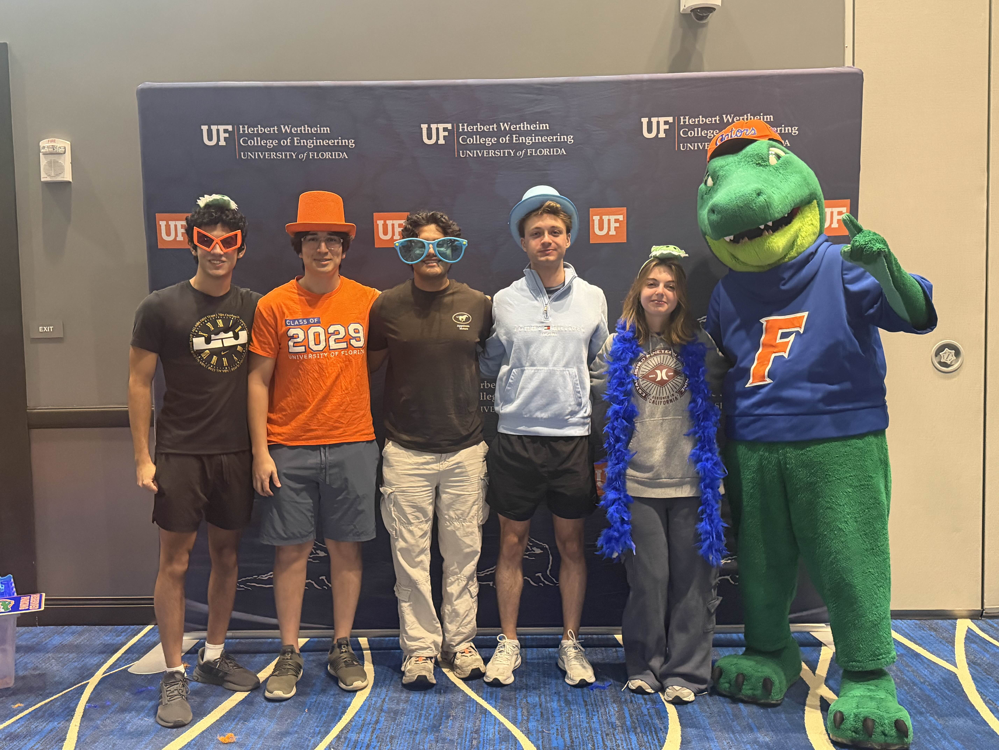
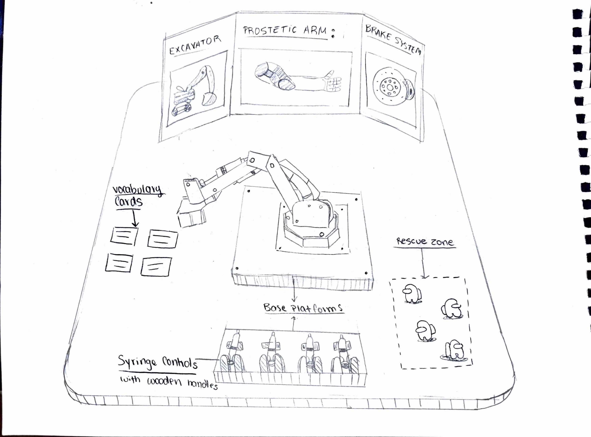
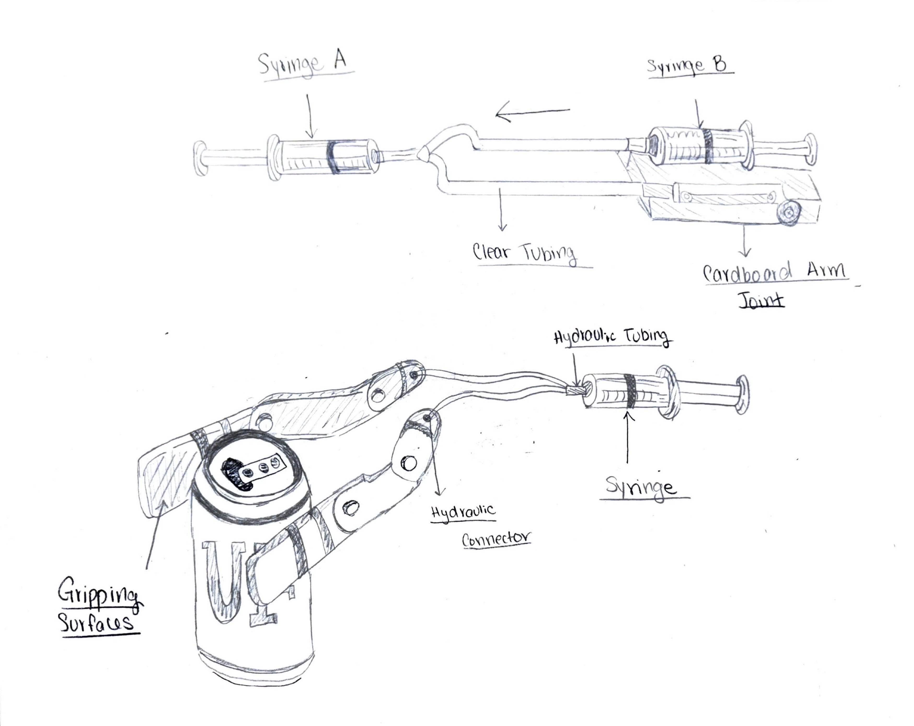

Liquid Lift
3rd Place - 3rd to 5th Grade Track
A hydraulic arm outreach activity that teaches 3rd-5th graders Pascal's Law and mechanical advantage through a hands-on "rescue mission" challenge.

Activity Overview
Students operate a tabletop robotic arm powered by water-filled syringes and clear tubing. By pushing and pulling syringe plungers, they control the arm to grab and move small objects in a "rescue mission" challenge - discovering how hydraulic pressure transfers force, the same principle behind excavators, car brakes, and prosthetic limbs.
Student Learning Objectives
- Explain how pushing or pulling one syringe moves another through a water-filled tube (Pascal's Law).
- Predict and test how syringe force changes how far and how strongly the hydraulic arm moves (force vs. distance).
- Compare hydraulics, pneumatics, and electric motors and describe one reason an engineer might choose each.
Concept Sketches

Sketch 1 - Tabletop Layout
Bird's eye view of the full setup: tri-fold poster at back (excavator, prosthetic arm, brake system), hydraulic arm center-table, rescue zone with toy objects, and laminated vocabulary cards.

Sketch 2 - Gripper Mechanism
Side-view cross-section of the hydraulic mechanism. Syringe A connects via colored water tubing to Syringe B at the joint. Two popsicle-stick "fingers" open and close via syringe pressure; rubber bands snap the gripper closed.
Team - Data Science & Informatics
| Name | Major |
|---|---|
| Matheus Maldaner | AI Systems |
| Luana Maldaner | Data Science & Microbiology |
| Alfred Navarro | Computer Engineering |
| Nicolas Murguia | Data Science & Physics |
| Pranav Bhargava | Computer Science |
Materials & Budget
All materials sourced from Amazon, Walmart, Zoro, and Dollar Tree. Total budget: $150.
Skills Applied
Full Project Report
The complete submission includes concept sketches, a CAD prototype, a teacher handout with Florida B.E.S.T. standards alignment, a full activity script, and an answer key.
View Full Report (PDF)